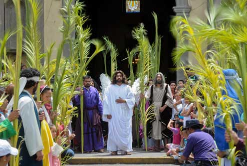
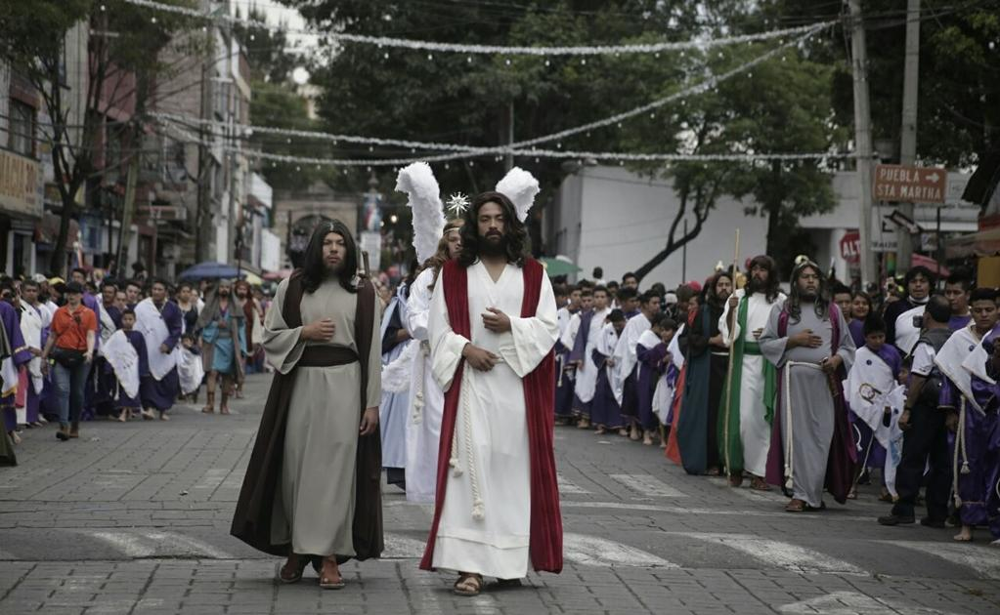
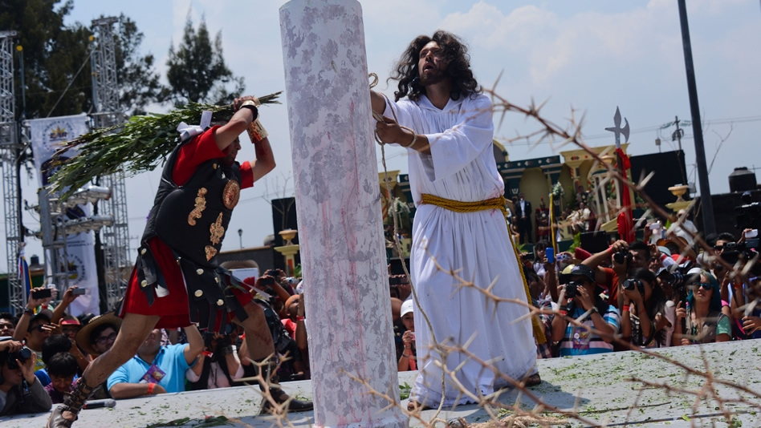
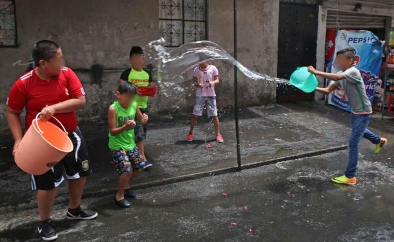
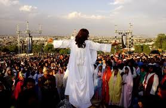

¿Como celebran la Semana Santa?
En Iztapalapa tiene lugar una ceremonia, fiesta y representación de la Pasión, que no responde ni a una narración sacra, ni a un teatro tradicional: es una expresión de múltiples aportaciones que se funde en una particular sincretización.

¿Como son los dias de la Semana Santa en Iztapalapa
Domingo de ramos
El Domingo de Ramos, las casas y las calles se llenan de flores, las campanas se echan a vuelo, y un ángel con un niño inician la procesión que avanza lentamente. Los cientos de nazarenos llevan adornos de bandas blancas sobre las túnicas moradas; las vírgenes y las mujeres del pueblo adornan sus cabezas con coronas de flores, la Virgen, la Magdalena, llevan atuendos únicos. Por momentos Iztapalapa se transforma en Jerusalén, la multitud se dirige al barrio de San Lucas para que el sacerdote bendiga las palmas, los ramos de manzanilla, romero y laurel (éstas se guardan, pues la gente les atribuye poderes curativos)

Jueves Santo
El Jueves Santo, los adornos en las calles son de color blanco y morado; los actores llegan al lugar donde han ensayado; llena de flores y frutas está la cárcel que Cristo ocupará más tarde. De una casa, sale la procesión que inician el niñoy el ángel, después las vírgenes, Jesús, los nazarenos, los sacerdotes y dignatarios romanos, flanqueados por los soldados. La procesión recorre las calles de los ocho barrios, y llega hasta la iglesia del Señor de la Cuevita, donde los presentes quieren tocar la urna y pedir gracias. Los nazarenos, que suman cientos, ahora llevan una corona de espinas con flores en la cabeza. Después de la alocución del obispo en la iglesia, continúa la escena de la última Cena en el Jardín Cuitláhuac; sigue el Lavatorio de los Pies; el Prendimiento, y la Oración del Huerto. Los parlamentos no coinciden con la Sagrada Escritura, se han transformado al correr de los años según el gusto de losparticipantes; lo mismo sucede con otros episodios que los lugareños han agregado.

Viernes Santo
El Viemes Santo congrega multitudes; la presencia de los encargados de la seguridad y de los primeros auxilios a los visitantes es muy evidente. Llevan a Cristo de la cárcel a la explanada,donde hay una columna; ahí se suceden varios episodios. La gente se estremece conmovída por la representación, cuando Jesús vestido de blanco es azotado con unas ramas teñidas de rojo. El rumor aumenta cuando la muchedumbre inicia el recorrido al Calvario-Cerro. La subida es difícil para los penitentes, actores y espectadores que quieren presenciar la escena; algunos se conforman con los periscopios de cartón adquiridos allí mismo. Todos deben llegar al lugar de las tres caídas, del encuentro con la Verónica, la Samaritana y las santas mujeres.

Sabado Santo
La procesión avanza lentamente, entre los árboles, en medio de sollozos, lamentos, lágrimas, desmayados y gritos de quienes ofrecen su mercancÍa, desde comida y sombreros, hasta refrescos y aparatos para ver mejor el espectáculo. Los soldados romanos, los más de mil nazarenos que llevan sus cruces a cuestas, los judíos, se entremezclan con los espectadores, las santas mujeres, los apóstoles. Todos ellos, que han estado en todos los momentos, llegan hasta el lugar donde están las tres cruces. La actuación del Cristo, que llena de fervor a los espectadores e imparte intensa emoción a todas las ceremonias, llega a la culminación con la Crucifixión. En el lugar sagrado del cerro, en la cruz más grande se coloca a Jesús.

Domingo Santo
La iglesia ahora alienta una representación paralela, diferente a la popular, que considera no está apegada a los textos bíblicos; es de hecho, el reconocimiento de dos puntos de vista: por una parte el de la tradición escrita y sancionada, la litúrgica en el interior del templo, y por otra la celebración callejera que va más allá de una escenificación, pues en ella convergen los ideales, las esperanzas de acabar con muchas de las dificultades de la vida; es más que teatro, es el enlace entre el pasado (el drama) y el presente, la búsqueda de reconocimiento de los organizadores y de los que participan, el gusto de los que toman parte como actores, o como espectadores. Todo ello permite que la fiesta, ceremonia o representación continúe por lo que significa no sólo para los de Iztapalapa sino para la nación entera.
